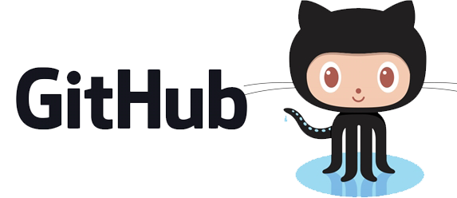
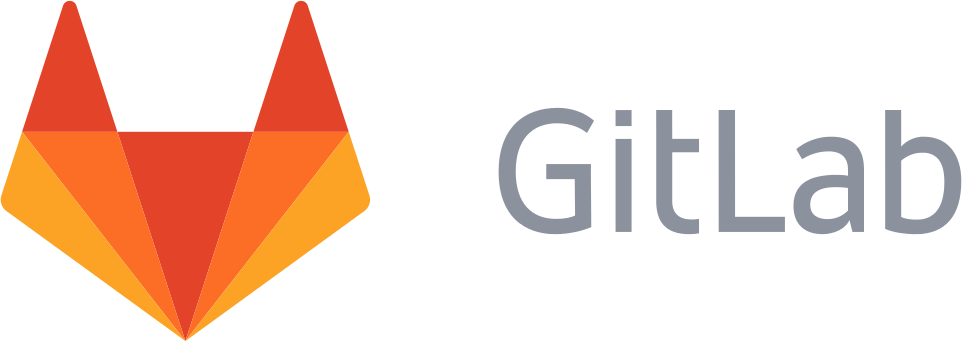
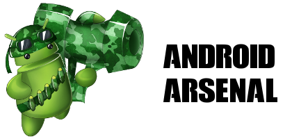

Navigation
JitPack
Easy to use package repository for Git
Publish your JVM and Android libraries
1.0.1
1.0.0
Works with



Support
Synthetic preservation controls
Existing dark solid surface, no gradient